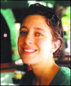

CAROL
BETTINGER-LOPEZ
por Ron Beasley
traducción de Ana Garcia Chíchester
Caroline Bettinger-López decidió explorar
a fondo la comunidad judeo-cubana de Miami como parte de
su tesis de grado universitario. El proyecto se convirtió
en un libro que se publicará en octubre y que la
ha encaminado a hacer planes para convertirse en abogada,
experta en asuntos de inmigración.
Bettinger-López, nativa de Pinecrest (área
de Miami) y graduada en 1994 de la escuela secundaria Palmetto
Senior High, dijo que la idea de escribir su libro --Cuban
Jewish Journeys: Searching for Identity, Home and History
in Miami--se solidificó casi al tercer año
de estudios en la Universidad de Michigan.
"Yo me especializaba en antropología y en mi
tercer año comencé a interesarme en estudiar
cuestiones de identidad, comunidad y cultura," dijo
ella. "Decidí que un lugar interesante para
ese estudio sería la comunidad cubana de Miami."
"La comunidad judeo-cubana tenía un interés
personal para mí," continuó. "Me
crié judía y me fasciné al enterarme
que existía una comunidad judía de la que
nunca había oído hablar. A pesar de haberme
criado e el sur de Miami, en el área de Pinecrest,
nunca me enteré de que existieran cubanos judíos
o de que hubiera dos sinagogas cubanas en Miami Beach, realmente
tres."
Bettinger-López comenzó a recorrer las áreas
de Little Havana y de Miami Beach, haciendo entrevistas,
recogiendo opiniones e información. Dice haber hablado
con cientos de personas que representan una sección
diversa y amplia de la comunidad.

"Este proyecto se hizo para mí un retrato etnográfico
de una comunidad que, a lo más, cuenta unos cuarenta
años de existencia," explicó, "una
comunidad que nunca conocí pero que se encontraba
en mis mismas narices. Yo quise reflejar las distintas perspectivas
de diferentes miembros de la comunidad cubana.
"Yo quise mostrar las perspectivas sobre la posición
de la mujer e indagar cómo la cultura tradicional
judía o la cultura cubana podría servir de
influencia al papel que desempeña la mujer o los
niños, indagar cómo esas influencias penetran
la vida de alguien y cómo podrían afectarle,
especialmente de acuerdo con la edad y la época en
que se llegó a este país, si naciste aquí
o a cuál generación de americanos perteneces.
Estas cuestiones formaron el esquema fundamental de este
libro."
Como tesis de grado universitario, el trabajo de Bettinger-López
ganó dos premios de honor y sus profesores la alentaron
a que publicara su investigación en forma de libro.
Según dice, varias casas de publicaciones expresaron
interés, pero ella decidió que lo publicaría
la imprenta de la Universidad de Tennessee, que presentará
el libro de más de 300 páginas a la venta
en octubre.
Como resultado de su investigación, Bettinger-López
se interesó vivamente en cuestiones de inmigración.
Al terminar sus estudios universitarios, trabajó
durante un año con la agencia de AmeriCorps como
defensora de estudiantes-víctimas en la escuela secundaria
Miami Beach Senior High, luego trabajó también
en el programa de Miami-Dade para niños víctimas
de abuso. El año pasado fue maestra de escuela en
Haití.
"Fui maestra de niños procedentes de las áreas
más pobres de Haití, pero que tenían
talento académico," dijo. "De ahí
me convencí que realmente necesitamos conectarnos
y sentí la necesidad de formar parte de los derechos
humanos, de la comunidad y tratar realmente de servir de
ayuda."
Bettinger-López y su esposo Sean se mudarán
a Nueva York este mes, donde ella se matriculará
en la facultad de derecho de la Universidad de Columbia.
"Realmente, debido a este libro, yo me interesé
en los derechos humanos y en las cuestiones de inmigración,
los derechos de los inmigrantes cuando llegan a esta tierra
estadounidense," dijo. "Así que voy a estudiar
derecho."